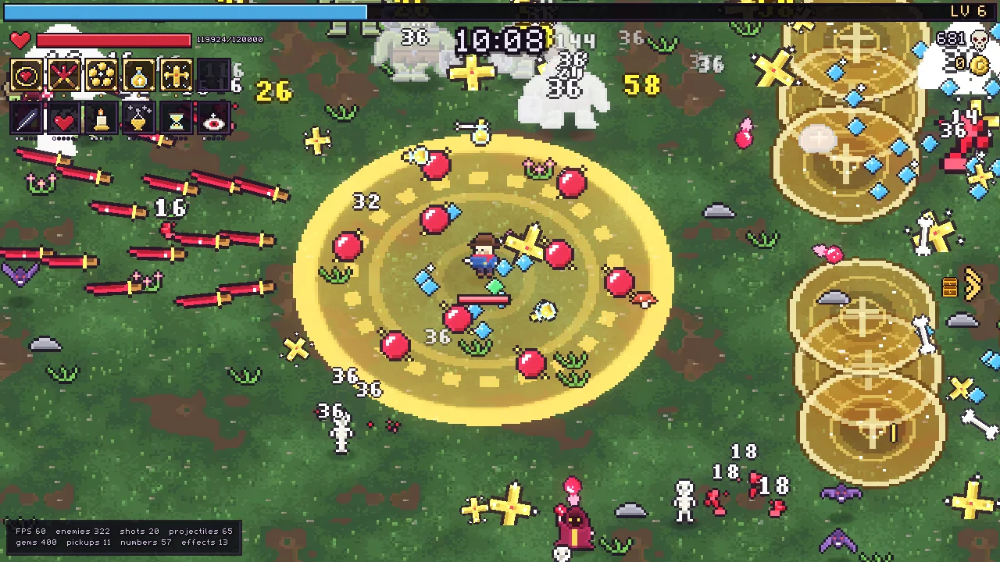
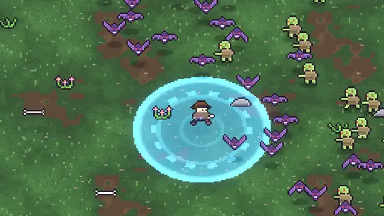

Bangun Knellbound dari proyek kosong
Game survivors-like 2.5D: dunia 3D, sprite pixel art berdiri menghadap kamera miring 50°, ribuan musuh di layar. Panduan ini mengikuti urutan asli pembuatannya, 8 fase, dan menjelaskan kenapa tiap keputusan diambil.

Untuk siapa panduan ini
Untuk kamu yang sudah pernah membuka Godot dan menulis sedikit GDScript, lalu ingin paham cara membuat game yang lengkap: dari gerak pemain sampai save file, dari shader sampai menu. Kamu tidak perlu pernah membuat game 3D. Kamu juga tidak perlu jago matematika; vektor dan sedikit trigonometri dijelaskan saat dipakai, dengan demo yang bisa kamu mainkan.
Tujuannya bukan menyalin kode. Kode lengkap sudah ada di repo. Tujuannya supaya kamu bisa menjawab pertanyaan seperti:
- Kenapa 1000 musuh tidak dibuat sebagai 1000 node, dan apa gantinya?
- Kenapa semua sistem tidak punya
_processsendiri? - Bagaimana sprite 2D bisa berdiri di dunia 3D tanpa terlihat gepeng?
- Bagaimana game di-pause tapi layar level up tetap bisa dianimasikan?
- Bagaimana menyimpan save supaya tidak rusak kalau game crash di tengah menulis?
Cara membaca
Setiap bab fase punya struktur yang sama. Kotak berwarna menandai jenis isinya:
Blok kode selalu dikutip dari repo, lengkap dengan path dan nomor baris. Kutipan dari fase lama diberi tanda commit (mis. @3f048ff) supaya kamu bisa membandingkan dengan versi sekarang. Klik gambar untuk memperbesar. Tekan / untuk mencari.
Riwayat git: cabang main dan history
Cabang main berisi satu commit rapi berisi game akhir. Riwayat per fase disimpan di cabang history. Tiap bab menyebut commit fasenya. Untuk melihat kode persis seperti di akhir suatu fase tanpa mengganggu folder kerjamu, buat worktree terpisah:
git log --oneline history # 3f048ff Phase 1 … 3b55d3c Phase 8
git worktree add ../knellbound-fase1 3f048ff
# buka ../knellbound-fase1/project.godot di Godot, lalu setelah selesai:
git worktree remove ../knellbound-fase1| Fase | Commit | Isi utama |
|---|---|---|
| 1 | 3f048ff | Scene 2.5D, kamera miring, EnemySwarm (MultiMesh), SpatialHash, Holy Aura |
| 2 | 2bd6ca3 | GemField, Stats + StatModifier, Leveling, layar level up (reroll/skip/banish) |
| 3 | b84a4fb | WeaponLevel, ProjectileField, 4 senjata baru |
| 4 | 35887be | 13 pasif, 5 evolusi, peti, loadout HUD |
| 5 | 80f5c88 | Perilaku musuh, WaveTable 30 menit, elite, boss, Knellwraith |
| 5b | 4fe0308 | Panel debug HUD multi-baris, H menyembunyikan bantuan tombol |
| 6 | 464f917 | Pickup sebagai data, objek pecahan, angka damage, efek, shake, hit-stop |
| 7 | 0c823de | Tema UI, font pixel, HUD lengkap, pause/options, ringkasan run, title |
| 8 | 3b55d3c | Save/load atomik, toko Reliquary, 5 hunter, audio |
Peta bab
Pohon scene sebuah run
Ini isi scenes/main.tscn di akhir Fase 8. Perhatikan betapa sedikit node-nya untuk game dengan ribuan objek: setiap "Field" adalah satu node yang menggambar ratusan sampai ribuan objek sekaligus.
Alur data dalam satu frame
Satu-satunya tempat urutan update ditentukan adalah Game._process. Game memanggil tick() milik tiap sistem, sistem mengembalikan hasil atau memancarkan sinyal, dan Game yang memutuskan efeknya. Panah tebal = panggilan langsung dari Game; panah putus-putus = sinyal kembali ke Game.
Demo berikut menjalankan urutan itu pelan-pelan. Coba tekan "Ambil gem" lalu perhatikan bahwa layar level up baru dibuka di langkah terakhir, bukan di tengah frame.
Lima aturan inti
Kalau kamu hanya mengingat satu bagian dari panduan ini, ingat lima aturan dari ARCHITECTURE.md ini. Semua bab menjelaskan kenapa aturan ini ada.
- Gameplay di bidang 2D
Vector2(x, z). Node 3D hanya untuk tampilan. Tabrakan, jarak, dan gerak dihitung di 2D, jadi murah dan sederhana. - Objek massal = packed array paralel + MultiMesh. Satu
RenderingServer.multimesh_set_bufferper frame per jenis objek, bukan satu node per musuh. - Urutan update hanya di
Game._process. Sistem tidak punya_process; mereka punyatick(dt, ...). - Tabrakan lewat
SpatialHashyang dibangun ulang tiap frame dengan counting sort. - Konten adalah data. Musuh, senjata, pasif, wave, pickup, karakter, toko: semuanya Resource
.tresdidata/.

3f048ff): pemain berjalan zig-zag, ratusan musuh mengejar, Holy Aura mendorong yang terlalu dekat.